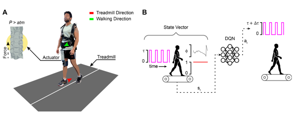

Personalizing Human Gait Entrainment
What:
This project investigates human gait entrainment in response to soft robotic hip perturbations on an active self-paced treadmill. Gait entrainment, the synchronization of human gait to external rhythmic stimuli, is a promising therapeutic approach for individuals with neurological disorders. This study employs a reinforcement learning (RL) approach to personalize perturbation magnitude, optimizing rehabilitation strategies for individual needs.
How:
The experimental setup consists of the following components:
- Soft Exosuit: A wearable system that applies periodic mechanical perturbations to the hip using pneumatic actuators.
- Active Self-Paced Treadmill: An instrumented treadmill that adjusts speed dynamically based on participant movement, ensuring natural gait patterns.
- Reinforcement Learning: A Deep Q-Network (DQN) optimizes perturbation magnitude based on real-time gait characteristics.
The study methodology involved:
- Participant Trials: Twelve healthy individuals participated, divided into offline training and in-situ validation groups.
- Data Collection: Gait characteristics, including entrainment success and phase variability, were recorded during perturbed walking trials.
- RL Training & Validation: The DQN was trained on offline data to determine optimal perturbation magnitudes and then validated in real-time trials.
Results:
Experimental results demonstrated the effectiveness of personalized perturbation magnitudes:
- Entrainment Success: Participants consistently achieved synchronization within the optimal perturbation range.
- Phase Variability Reduction: The RL-optimized perturbations led to lower phase variability across strides.
- Individualized Optimization: The study highlighted significant variability in optimal perturbation magnitudes, emphasizing the need for personalization.
The findings suggest that reinforcement learning can enhance gait entrainment therapies by adapting perturbations to individual needs. This approach holds potential for improving rehabilitation strategies for individuals with neurological disorders, ultimately enhancing mobility and quality of life.